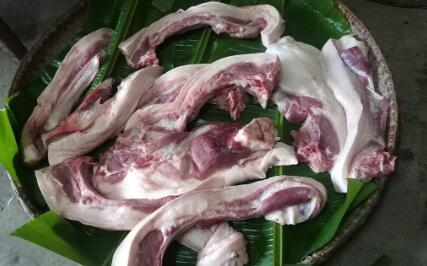
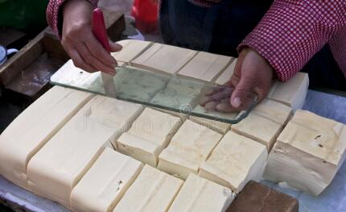

随着越来越多的农村人进城打工，留守农村的人越来越少了，因此很多人说农村的生意越来越不好做了，但是在有些人眼里，正是因为农村人都进城了，留守的都是上了年纪的老人和妇女，所以农村的生意反而又好做了，且听我慢慢道来。
真实案例：
我们镇上有一家百货商店，什么都卖，关键是他们家商品比别的店便宜，这些年农村人大量外出打工，所以生意相对差了些，他就想了一个办法，让他们家生意一直比较不错，你知道这是一个什么样得方法吗？
一、百货商店送货上门
因为农村留守的都是中老年人以及妇女，他们去镇上购物非常不方便，关键是要是打车来回还要花费几十元甚至上百元，所以很多农村留守的人都是很少去镇上购物，于是这家百货店的老板就动起了脑筋，他提供送货上门服务。
比如说春耕前，他会拉上一货车化肥去农村挨家挨户吆喝，挨家挨户送化肥，因为他直接把化肥扛到农村人家里，所以省了农村人的很多事情，关键是还可以赊账，所以绝大多数留守的老百姓都愿意从他这买化肥。
这家百货店不仅送化肥上门，只要农村人家给他打电话买商品，货物总价值超过100块钱，也都给人家送上门，所以有些农村人经常邀着一起列出商品的名单，给他们家打电话，让他们家送货上门。正是因为他提供了送货上门的服务，所以虽然现在农村人口少了，但是他们家生意并没有差多少。虽然门店看起来冷清，但是生意还是做出去了，不像农村的有些商店，那是真的没有生意。
二、下乡卖猪肉
我每次回老家，都能见到下乡买猪肉的老乡（养猪户）。说实话我们家到镇上只有3公里，骑车来回不超过半个小时，算是很方便了。所以吃肉都是去镇上买，但是别的人家就不行，比如我邻居家，他都70多岁了，又不会骑车，上街非常不方便，买肉吃基本上就是让别人从镇上帮忙买，但是总是麻烦别人，他也很不好意思。

正是看到这样的现状，所以一些养猪的人家就看到了商机，他们每隔一段时间就会开着三轮车托着一整只杀好的猪肉在农村吆喝，因为是自己养的，又是传统宰杀的，所以很多人都愿意买他的猪肉，久而久之就形成了一种默契，特别是逢年过节的时候，很多农村人会提前和他定猪肉，他卖一只猪不要半天就卖光了，甚至比镇上的肉摊卖肉还要快。
三、下乡卖豆腐
除了猪肉，我们农村人最喜欢吃的就是豆腐了，现在的农村不像过去，过去想吃豆腐自己做，现在都不做了，花钱买就好了，但是买豆腐也要去镇上，两块豆腐4块钱，去一趟镇上显然不划算。
所以卖豆腐的人也考虑到这一点，就骑车下乡买豆腐，挨家挨户吆喝，一天买豆腐也能有四五百的收入。

四、送苗下乡
除了卖商品、吃的以外，这几年送苗下乡的生意也挺火爆，比如说每年冬天和春天都有开车送茶树苗下乡的，我们这很多人种植茶树，需要大量的茶树苗，就是从这些下乡卖苗的人手里买的，他们一车苗能够净赚500多块钱。
还有送各种蔬菜苗的，比如辣椒、黄瓜、茄子、西红柿、西瓜等等，每到农村人种植这些蔬菜的时候，就有人下乡卖这些蔬菜的苗，深受我们农村人的喜欢，所以他们的生意做的也还可以，每次下乡挣个四五百那也是常有的事情。
五、流动宴席
其实最赚钱的我觉得还是流动宴席。因为农村人大量外出，所以举办酒席都找不到人帮忙，因此喝喜酒啥的都是花钱请流动宴席来做饭。
像我们村民组从去年到今年至少办了4场酒席，总桌数将近80桌。按照一桌利润200块钱来计算，这笔收入就将近16000块钱了，这在农村可不是一笔小数目了。
总之，作为农村人，我认为现在农村的生意并不是难做，其实农村也是有市场的，关键还是在于如何找到在农村乡下做生意的突破口，就像我们这一些生意人就瞄准了农村留守的老人去镇上买东西不方便的现状，送货上门，所以才能够把生意做出去，建立长久的联系，生意自然也就比较红火了。